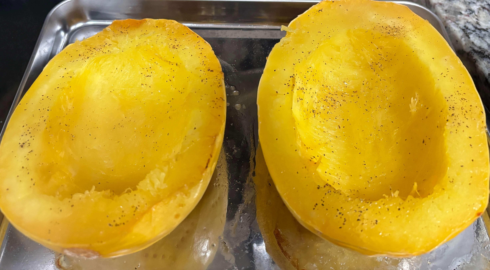

Home
Spaghetti Squash

Ingredients
- 1 spaghetti squash
- Extra virgin olive oil
- Sea salt and ground black pepper
Steps
- Preheat the oven to 400°F
- Slice the spaghetti squash in half lengthwise and scoop out the seeds and ribbing. Drizzle the inside of the squash with olive oil and sprinkle with salt and pepper.
- Place the spaghetti squash cut side down on the baking sheet and use a fork to poke holes. Roast for 30 to 40 minutes or until lightly browned on the outside, fork tender, but still a little bit firm. The time will vary depending on the size of your squash. I also find that the timing can vary from squash to squash.
- Remove from the oven and flip the squash so that it's cut side up. When cool to the touch, use a fork to scrape and fluff the strands from the sides of the squash.
If your squash is too hard to cut, soften it slightly in the oven or microwave before slicing it in half.
- Roast the squash whole. Prick it all over with a fork and bake at 400°F for 10 minutes to make it easier to cut.
- Microwave the squash. Prick it all over with a fork and microwave in 1-minute bursts until it's soft enough to cut.